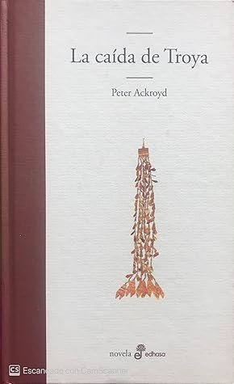

La caída de Troya
Reseña por Jorge I. Zuluaga

Ver reseña en GoodReads (necesita cuenta)
Perfecta para quienes amamos la obra de Homero (¡yo la descubrí apenas hace poco!) y la igualmente fascinante historia del asombroso Heinrich Schliemann y su no menos admirable esposa, Sophia Engastromenos, que descubrieron las ruinas de Troya (enterrada debajo y sobre otras muchas Troyas de siglos antes y después de la ciudad mítica del poema homérico) en la solitaria colina de Hisarlik, cerca de las costas del Helesponto, en lo que hoy es Turquía.
Precisamente, casi toda la acción de la novela se desarrolla en las excavaciones que Schliemann (personificado aquí por Herr Heinrich Obermann) ha iniciado ya en la colina de Hisarlik, a la que llega su nueva y todavía confundida esposa, Sophia Chrysianthis (que naturalmente personifica a la Sophia verdadera). La novela cubre un corto período de tiempo de unos meses o hasta un año, en el que, sin embargo, se producen eventos increíbles, entre la realidad histórica, la más evidente de las fantasías y algunas especulaciones del autor sobre el aún oscuro origen e historia de los antiguos habitantes de Ilión (el nombre en la "lengua de los dioses" de Troya), o como diría Homero, los teucros, domadores de caballos.
Me encontré el libro en una canasta de ofertas en una librería en Colombia (a la que agradezco infinitamente por hacer esto: vender libros a precios accesibles en un país que casi no lee).
El costo, $15.000 pesos (aproximadamente 4 USD), es desconcertantemente incompatible con la cuidada edición que hizo la editorial Edhasa (2006): tapa dura y papel de calidad.
Es claro que se trataba de un saldo, pero qué suerte tendrán quienes, como yo, se cruzaron con esta novela vendida como saldo y que seguramente seguirá teniendo lectores en las décadas por venir.
Me sorprendió mucho descubrir la calificación promedio tan baja que tenía la novela en Goodreads (3.3). Es raro ver libros de autores relativamente reconocidos como Ackroyd con calificaciones tan bajas. Eso me predispuso un poco al comenzar a leerla (lamentablemente).
Unos cuantos capítulos después, me sorprendí atrapado por la historia. Ahora no sé por qué está tan mal calificada. Con respeto a todos los lectores que me precedieron, creería que una de las razones para calificarla tan mal es pensar que se trata de una historia completamente ficticia.
Como mencioné al principio, para quienes conocen la asombrosa aventura de Schliemann, es imposible no sentirse fascinados por una reconstrucción aparentemente fiel de su personalidad y por el recuento del tipo de aventuras (así las del libro sean imaginarias) que posiblemente vivió al lado de su esposa mientras desenterraba la mítica Troya.
La novela te transporta al incómodo pero al mismo tiempo sorprendente mundo de una excavación arqueológica (tal vez no la más rigurosa, como lo señalan algunos de los protagonistas y como lo recuerdan los especialistas de los trabajos iniciales de Schliemann). Las condiciones difíciles de la vida en un lugar elegido por el azar por la historia (el que una vez fue un emplazamiento de importancia, en un reino respetado y desarrollado, ahora puede estar en la mitad de una llanura desolada en un país socialmente atrasado); sometido a los caprichosos elementos o bajo el riesgo permanente de saqueos o la destrucción accidental de objetos maravillosos con secretos desconocidos, tan solo al entrar en contacto con el aire.
Los diálogos son imaginativos y vivaces. En ocasiones, me sentí leyendo una obra de teatro. Me encantaría que la novela fuera llevada al cine y no dudaría que sería un drama exitoso, además de un excelente medio de divulgación de la arqueología y un modo de recordar la increíble historia del descubrimiento de Troya por Schliemann. Me extraña que el cine o la televisión no hayan explotado más la figura de este personaje.
En fin. Lean a Homero, lean "La caída de Troya" de Ackroyd.